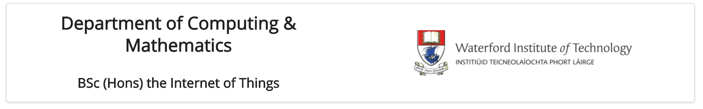
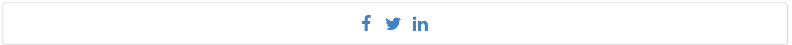

Objectives
Rebuild the iot web site using semantic-ui
Setup
The starting point for this lab is the final version of the project from the last lab:
If you have the lab completed, you can use your version. Otherwise, download and unarchive the above project.
You will need to run harp to get the project rendered successfully:
C:\My Documents> G:
G:\> node\init
G:\> cd iot-web-ejs
G:\iot-web-ejs> harp server
Your server is listening at http://localhost:9000/
Press Ctl+C to stop the serverThen browse to:
to see the page in action. For the rest of this lab, keep the harp server running and use the local host link to view the site are you progress through the steps.
Your project should be structured like this:
iot-web-ejs
├── harp.json
└── public
├── assets
│ └── images
│ ...
├── includes
│ ├── _curriculum.ejs
│ ├── _footer.ejs
│ ├── _header.ejs
│ ├── _sponsors.ejs
│ └── _summary.ejs
├── index.ejs
├── strands
│ ├── _layout.ejs
│ ├── data.ejs
│ ├── devices.ejs
│ ├── maths.ejs
│ ├── networks.ejs
│ ├── programming.ejs
│ └── project.ejs
└── style.cssMake sure you can see this structure in Windows Explorer / Mac Finder.
semantic.css
The first step is to download and save the semantic style sheet. Download this archive here:
and expand it into the assets folder of your project.
Make sure it has been expanded correctly - your project structure should look something like this:
iot-web-ejs
├── harp.json
└── public
├── assets
│ ├── css
│ │ ├── semantic.css
│ │ └── themes
│ │ ├── basic
│ │ ├── default
│ │ └── github
│ └── images
│ ...
├── includes
│ ├── _curriculum.ejs
│ ├── _footer.ejs
│ ├── _header.ejs
│ ├── _sponsors.ejs
│ └── _summary.ejs
├── index.ejs
├── strands
│ ├── _layout.ejs
│ ├── data.ejs
│ ├── devices.ejs
│ ├── maths.ejs
│ ├── networks.ejs
│ ├── programming.ejs
│ └── project.ejs
└── style.cssThere should be an extra css folder - with the files/folders shown above.
You should delete the css.zip folder if it is present.
First Steps...
Open index.ejs and introduce a link to the style sheet we downloaded in the last step:
<link rel="stylesheet" href="/assets/css/semantic.css">This goes into the <head> section of index such that it will look like this:
index.ejs
<head>
<meta charset="UTF-8">
<link rel="stylesheet" type="text/css" href="http://fonts.googleapis.com/css?family=Open+Sans" />
<link rel="stylesheet" href="/assets/css/semantic.css">
<link type="text/css" rel="stylesheet" href="style.css" media="screen"/>
<title>BSc in the Internet of Things</title>
</head>We will also replace the current stylesheet with the following:
style.css
.banner {
background: url("/assets/images/banner.jpg") top center;
background-position: top center;
color: white;
height:300px;
}The page is now back to being unformatted - where we started a few weeks ago - as we have removed almost all of the style sheet rules.
Make sure can see this by browsing the site locally:
Your page should look like this:

Container
The <body> of our index page looks like this:
<body>
<%- partial("includes/_header.ejs") %>
<%- partial("includes/_summary.ejs") %>
<%- partial("includes/_curriculum.ejs") %>
<%- partial("includes/_sponsors.ejs") %>
<%- partial("includes/_footer.ejs") %>
</body>Adjust it to the following:
<section class="ui container">
<%- partial("includes/_header.ejs") %>
<%- partial("includes/_summary.ejs") %>
<%- partial("includes/_curriculum.ejs") %>
<%- partial("includes/_sponsors.ejs") %>
<%- partial("includes/_footer.ejs") %>
</section>This is your first Semantic-UI class - more or less replacing the margin: 0 auto we were previously using. You can read about the container class in semantic's documentation here:
Look at some example here to get a feel for the documentation:
And, of course, make sure you can see the change your site:
Your page should look like this:

Segment
The cornerstone of many of the styles in Semantic-UI is the segment class:
Open _curriculum.ejs and make the following changes:
- remove all of the
ids andclasss currently in the file. - give the enclosing article the class
class="ui segment"
Your _curriculum.ejs page should look like this:
<article class="ui segment">
<hr>
<section>
<h2><a href="strands/programming.html"> Programming </a></h2>
<p>
Learn a broad range of programming and problem solving skills, including exciting new platforms, software tools and languages. Use these skills to build apps for mobile, cloud and device based IoT applications. Evolve a porfolio of facinating aplications.
</p>
<h2><a href="strands/data.html"> Data Science </a></h2>
<p>
At the heart of many IoT applications is data: measurements, events alarms and other information that must be relayed, stored and ultimately turned into knowledge. Learn the fundamentals of modern approaches to data in this strand.
</p>
<h2><a href="strands/devices.html"> Devices </a></h2>
<p>
The 'Things' we connect to are often physical devices. These can range from simple temperature sensors to sophisticated control systems like traffic lights or cameras. Connecting to and interacting with the physical world is the subject of this strand.
</p>
</section>
<section>
<h2><a href="strands/networks.html"> Networks </a></h2>
<p>
This strand will explore modern networks and cloud technology. Be able to configure, network and manage all categories of computer systems from simple controlers to single board board computers, mobiles and full workstations.
</p>
<h2><a href="strands/project.html"> Project </a></h2>
<p>
Building exciting IoT projects in every semester of the programme. Your projects will combine skills acquired from the other strands and enable you to build a comprehensive an compelling portfolio of IoT applications and services.
</p>
<h2><a href="strands/maths.html"> Mathematics </a></h2>
<p>
Introduce foundation concepts for many of the more applied concepts in the other Strands. Learn mathematical techniques in a modern context and apply core principles in new an interesting ways.
</p>
</section>
</article>In the browser it should appear:
Notice the frame around the section.
Do the same for:
- _header.ejs
- _footer.ejs
- _sponsors.ejs
i.e. replace the
<header id="header">with
<header class="ui segment">Also, remove the horizontal rulers (<hr>) form all includes. These files should now be like this:
_header.ejs
<header class="ui segment">
<h2>
<img class="header-crest-img" src="/assets/images/wit-crest.png" alt="WIT Crest">
Department of Computing & Mathematics
</h2>
<h3> BSc (Hons) the Internet of Things </h3>
</header>_footer.ejs
<footer class="ui segment">
<p class="footer-social-links">
<a href="http://www.facebook.com/witcomp"> facebook </a>
<a href="http://twitter.com/ComputingAtWIT"> twitter </a>
<a href="https://ie.linkedin.com/pub/computing-at-wit/a9/221/1b6"> linkedin </a>
</p>
</footer>_sponsors.ejs
<section class="ui segment">
<h4> Supported by leading edge research at... </h4>
<p>
<img class="footer-img" src="assets/images/tssg.png" alt="TSSG">
<img class="footer-img" src="assets/images/ctrg.png" alt="CTRG">
<img class="footer-img" src="assets/images/automotive.png" alt="ATG">
</p>
</section>The pages will start to look like this:

layout
In the strands folder, all pages are based in the single _layout.ejs template we have defined. This now make is very easy for use to introduce ui segments into all pages:
This is the current <body> of _layout.ejs:
<!DOCTYPE html>
<html lang="en">
<head>
<meta charset="UTF-8">
<link rel="stylesheet" type="text/css" href="http://fonts.googleapis.com/css?family=Open+Sans" />
<link type="text/css" rel="stylesheet" href="../style.css" media="screen"/>
<title> IoT Strands </title>
</head>
<body>
<%- partial("../includes/_header.ejs") %>
<%- yield %>
<%- partial("../includes/_footer.ejs") %>
</body>
</html>and this is a new version:
<!DOCTYPE html>
<html lang="en">
<head>
<meta charset="UTF-8">
<link rel="stylesheet" type="text/css" href="http://fonts.googleapis.com/css?family=Open+Sans" />
<link rel="stylesheet" href="/assets/css/semantic.css">
<link type="text/css" rel="stylesheet" href="../style.css" media="screen"/>
<title> IoT Strands </title>
</head>
<body>
<section class="ui container">
<%- partial("../includes/_header.ejs") %>
<section class="ui segment">
<%- yield %>
</section>
<%- partial("../includes/_footer.ejs") %>
<section>
</body>
</html>It includes the semantic.css in the header, and also container and segment styles. We do this once, and all the pages in the strands folder will be updated:
Grids I
This is our current _header.ejs template:
<header class="ui segment">
<h2>
<img class="header-crest-img" src="/assets/images/wit-crest.png" alt="WIT Crest">
Department of Computing & Mathematics
</h2>
<h3> BSc (Hons) the Internet of Things </h3>
</header>And this is how it renders:
Not very attractive layout!
Our objective is to get it looking something like this:

In the above we seem to have two columns - and the images and text are nicely proportioned, aligned and spaced. How do we do this?
This is the semantic-ui grid class:
..and here is a first attempt at establishing a grid:
<header class="ui two column grid segment">
<div class="ui column">
<h2 class="ui header"> Department of Computing & Mathematics </h2>
<h3 class="ui header"> BSc (Hons) the Internet of Things </h3>
</div>
<div class="ui column">
<p>
<img class="ui medium image" src="../assets/images/wit-crest.png" alt="WIT Crest">
</p>
</div>
</header>Try this out now - it should look like this:

Not quite there yet - but the two columns should be visible.
Change the header class to the following:
<header class="ui two column center aligned grid segment">Can you see an improvement?
Now change the image element to the following:
<img class="ui medium image" src="/assets/images/wit-crest.png" alt="WIT Crest">
Finally, change the header again to this:
<header class="ui two column center aligned middle aligned grid segment">.. and see the difference:
This is the complete _header.ejs template
<header class="ui two column center aligned middle aligned grid segment">
<div class="ui column">
<h2 class="ui header"> Department of Computing & Mathematics </h2>
<h3 class="ui header"> BSc (Hons) the Internet of Things </h3>
</div>
<div class="ui column">
<p>
<img class="ui medium image" src="/assets/images/wit-crest.png" alt="WIT Crest">
</p>
</div>
</header>The alignment is part of the segment properties - and you can read about it here:
Grids II
We can apply the same principles to tidy up the _sponsors.ejs template:
<section class="ui segment">
<h4> Supported by leading edge research at... </h4>
<p>
<img class="footer-img" src="assets/images/tssg.png" alt="TSSG">
<img class="footer-img" src="assets/images/ctrg.png" alt="CTRG">
<img class="footer-img" src="assets/images/automotive.png" alt="ATG">
</p>
</section>This currently looks like this:

And we would like to make it look like this:

To achieve this, we need to think of the section consisting of 2 rows. The first row is the single line of text:
<h4> Supported by leading edge research at... </h4>and the second row is the three images:
<img class="footer-img" src="assets/images/tssg.png" alt="TSSG">
<img class="footer-img" src="assets/images/ctrg.png" alt="CTRG">
<img class="footer-img" src="assets/images/automotive.png" alt="ATG">The Semantic-UI grid systems provides the tools for this:
Have a look at this version of this section:
<section class="ui grid segment">
<section class="ui row">
<p> Supported by leading edge research at... </p>
</section>
<section class="ui three column row">
<div class="ui column">
<img class="ui image" src="/assets/images/tssg.png">
</div>
<div class="ui column">
<img class="ui image" src="/assets/images/ctrg.png">
</div>
<div class="ui column">
<img class="ui image" src="/assets/images/automotive.png">
</div>
</section>
</section>It is a grid segment - with two rows. The first row has no columns - it is the full width of the section. The second row is a three column row. Try this out now:

One more change to center align the elements:
<section class="ui center aligned grid segment">
<section class="ui row">
<p> Supported by leading edge research at... </p>
</section>
<section class="ui three column row">
<div class="ui column">
<img class="ui image" src="/assets/images/tssg.png">
</div>
<div class="ui column">
<img class="ui image" src="/assets/images/ctrg.png">
</div>
<div class="ui column">
<img class="ui image" src="/assets/images/automotive.png">
</div>
</section>
</section>
Grids III
Currently our curriculum section looks like this:

We would like the reformat it as follows:
This is the current source:
<article class="ui segment">
<section>
<h2><a href="strands/programming.html"> Programming </a></h2>
<p>
Learn a broad range of programming and problem solving skills, including exciting new platforms, software tools and languages. Use these skills to build apps for mobile, cloud and device based IoT applications. Evolve a porfolio of facinating aplications.
</p>
<h2><a href="strands/data.html"> Data Science </a></h2>
<p>
At the heart of many IoT applications is data: measurements, events alarms and other information that must be relayed, stored and ultimately turned into knowledge. Learn the fundamentals of modern approaches to data in this strand.
</p>
<h2><a href="strands/devices.html"> Devices </a></h2>
<p>
The 'Things' we connect to are often physical devices. These can range from simple temperature sensors to sophisticated control systems like traffic lights or cameras. Connecting to and interacting with the physical world is the subject of this strand.
</p>
</section>
<section>
<h2><a href="strands/networks.html"> Networks </a></h2>
<p>
This strand will explore modern networks and cloud technology. Be able to configure, network and manage all categories of computer systems from simple controlers to single board board computers, mobiles and full workstations.
</p>
<h2><a href="strands/project.html"> Project </a></h2>
<p>
Building exciting IoT projects in every semester of the programme. Your projects will combine skills acquired from the other strands and enable you to build a comprehensive an compelling portfolio of IoT applications and services.
</p>
<h2><a href="strands/maths.html"> Mathematics </a></h2>
<p>
Introduce foundation concepts for many of the more applied concepts in the other Strands. Learn mathematical techniques in a modern context and apply core principles in new an interesting ways.
</p>
</section>
</article>Using the grid system, we divide the section int two rows:
<section class="ui grid segment">
<section class="ui three column row">
<article class="column">
... code for the first column
</article>
<article class="column">
... code for the seconod column
</article>
<article class="column">
... code for the third column
</article>
</section>
<section class="ui three column row">
<article class="column">
... code for the first column
</article>
<article class="column">
... code for the second column
</article>
<article class="column">
... code for the third column
</article>
</section>
</section>Can you see the structure?
Here is the complete section:
<section class="ui grid segment">
<section class="ui three column row">
<article class="column">
<h2> <a href="strands/programming.html"> Programming </a> </h2>
<p>
Learn a broad range of programming and problem solving skills, including exciting new platforms, software tools and
languages. Use these skills to build apps for mobile, cloud and device based IoT applications. Evolve a porfolio of
facinating aplications.
</p>
</article>
<article class="column">
<h2> <a href="strands/data.html"> Data Science </a></h2>
<p>
At the heart of many IoT applications is data: measurements, events alarms and other information that must be relayed, stored and ultimately turned into knowledge. Learn the fundamentals of modern approaches to data in this strand.
</p>
</article>
<article class="column">
<h2> <a href="strands/devices.html"> Devices </a></h2>
<p>
The 'Things' we connect to are often physical devices. These can range from simple temperature sensors to sophisticated control systems like traffic lights or cameras. Connecting to and interacting with the physical world is the subject of this strand.
</p>
</article>
</section>
<section class="ui three column row">
<article class="column">
<h2> <a href="strands/networks.html"> Networks </a></h2>
<p>
This strand will explore modern networks and cloud technology. Be able to configure, network and manage all categories of computer systems from simple controlers to single board board computers, mobiles and full workstations.
</p>
</article>
<article class="column">
<h2> <a href="strands/project.html"> Project </a></h2>
<p>
Building exciting IoT projects in every semester of the programme. Your projects will combine skills acquired from the other strands and enable you to build a comprehensive an compelling portfolio of IoT applications and services.
</p>
</article>
<article class="column">
<h2> <a href="strands/maths.html"> Mathematics </a></h2>
<p>
Introduce foundation concepts for many of the more applied concepts in the other Strands. Learn mathematical techniques in a modern context and apply core principles in new an interesting ways.
</p>
</article>
</section>
</section>Which should look like this:
Note the use of blank lines in the code to help keep the structure readable.
Archive
This is the version of the site at this stage:
Exercise 1: Icons
Currently the footer looks like this:

See if you can figure out how to make the section look like this:

As well as the alignment options you have seen so far in this lab, the icons section of the Semantic-UI documentation should help:
Exercise 2: Assignment 2
If you have started to move your assignment towards templates, you can also make a start at making use of Semantic UI. Consider introducing the following classes:
- ui container
- ui segment
- ui grid
- ui row
- ui col
- ui center aligned
- ui middle aligned
- ui image
- ui medium image
- ui large image
- ui small image
We have not yet covered navigation in Semantic-UI. However, it is not too difficult to figure it out. Look at this section here:
Which demonstrates a very simple menu like this:
<div class="ui three item menu">
<a class="item">Editorials</a>
<a class="item">Reviews</a>
<a class="item active">Upcoming Events</a>
</div>The above code renders something close to the tab bar you may have been using:
Experiment with the above in your assignment.